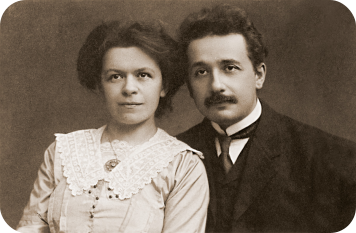
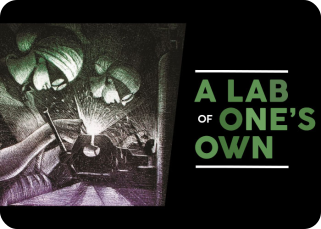
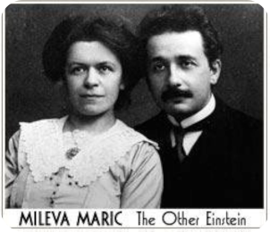

Articles sur l'Effet Matilda

Née en 1875, en Serbie, Mileva Marić était une étudiante exceptionnelle en mathématiques et en physique à l’École Polytechnique fédérale de Zurich. Elle était la seule femme de sa classe. C’est là-bas qu’elle a rencontré Albert Einstein, en 1896. Les lettres d’Einstein révèlent que les deux collaboraient étroitement sur ses théories. Elles mentionnent “notre travail” et “nos recherches sur le mouvement relatif”. Plusieurs historiens suggèrent que Mileva a joué un rôle crucial dans le développement de la théorie de la relativité restreinte publiée en 1905.
Les lettres échangées entre Albert et Mileva révèlent une collaboration intellectuellement profonde qui a longtemps été minimisée par l’histoire. Dans ses lettres à Mileva, Einstein utilise fréquemment des termes comme “notre article” et “notre théorie du mouvement relatif”. Une lettre de 1901 mentionne : “Je serai si heureux et fier quand nous aurons ensemble mené notre travail sur le mouvement relatif à une conclusion victorieuse.” Ces correspondances suggèrent que Mileva n’était pas qu’une simple confidente, mais une véritable partenaire scientifique. Pourtant, son nom n’apparaît dans aucune des publications de 1905, les “Annus Mirabilis” d’Einstein.
Mileva Marić était l’une des rares femmes à étudier la physique au début du XXe siècle. Brillante, tenace, prometteuse, elle rêvait d’une carrière scientifique. Pourtant, après son mariage, Mileva se retrouve rapidement face à des contraintes l’empêchant de poursuivre ses recherches et sa carrière. Elle est réduite à s’occuper des enfants et à soutenir la carrière d’Einstein en retrait. Elle copiait ses manuscrits, vérifiait ses calculs mathématiques et gérait le foyer pendant qu’il se concentrait pleinement sur ses travaux. Cette situation tragique a effacé progressivement ses contributions de l’histoire officielle. Son génie reste dans l’ombre, caché par son mari, alors qu’en réalité elle obtenait souvent des meilleurs notes que lui et avait également plus de facilités en mathématiques. Après leur séparation, Mileva s’est justement mise à donner des leçons de mathématiques et même de piano. Elle incarne ainsi l’effet Matilda, une femme dont les contributions et talents ont été invisibilisés.
Dans cet écrit, Patricia Fara montre comment de nombreuses diplômées de Newnham College ont œuvré en médecine, chimie ou biologie pendant la Première Guerre Mondiale, tout en restant largement invisibles dans les récits officiels. En reliant histoire des sciences et les mouvements suffragettes, elle révèle comment ces chercheuses ont à la fois soutenu l’effort de guerre et revendiqué plus de droits politiques. Son ouvrage montre bien en quoi cette problématique, cette non reconnaissance persiste encore malgré tout.
Le film The Othe Einstein s’intéresse à Mileva Marić, première épouse d’Albert Einstein et physicienne brillante dont le travail a longtemps été régulé dans l’ombre. Il retrace son parcours depuis son enfance en Serbie jusqu’à ses études de physique à Zurich, où elle se heurte aux préjugés d’un milieu scientifique dominé par les hommes. Le film met en scène sa collaboration intellectuelle avec Einstein, tout en montrant comment sa carrière est peu à peu sacrifiée au profit de la sienne. Ce film illustre concrètement l’effet Matilda : les contributions d’une femme effacées au profit d’un collège masculin plus célèbre.